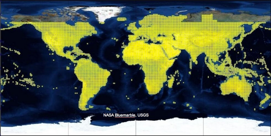

Manage mosaics with virtual rasters¶
When you have large datasets of imagery or terrain resources,
importing them into Fusion can be inefficient and lead to gaps
between data tiles. GEE provides a tool, gevirtualraster,
which is ideal for grouping blocks (or subsets) of contiguous
imagery or terrain and creating a virtual mosaic from them.
In the following example, this SRTM 90meter terrain dataset has over 14,476 source files.

This example of a large set of terrain data presents three potential ways to import all large datasets of source files:
- Create one resource for all source .tif tiles. This data processing is inefficient as Fusion must fill all missing data between source terrain tiles (oceans).
- Create one terrain resource per .tif file (14,476 in total). This data processing is inefficient and introduces feather gaps between terrain resources due to no overlap between source files.
- Group the 14,476 files into virtual mosaics enabling you to select which files are grouped into mosaics.
The most efficient method of grouping tiles into virtual mosaics
is to use gevirtualraster, a command line tool that lets you
access the tile groups directly, making your mosaic management
very flexible. Gevirtualraster validates that each source file
has geographic coordinates and that all files are consistent
projections, number of bands, and band formats.
Overview
A virtual mosaic or virtual raster file is a simple text file that describes a mosaic of peer raster files with the following elements:
- Projection parameters (all peers with same projection)
- Coordinate location of the overall raster (sum of parts)
- Pixel dimensions
- Band count and format (3 x 8 bit vs. 1 x 8 bit)
- File path of all included source files
Fusion can display the virtual raster file in Preview for simple visualization.
Fusion can also use the virtual raster file as source.
Note
Gevirtualraster is necessary if you are creating
a custom mask file for the imagery or terrain resource as there
is a software requirement of one source file for one custom
mask file. See Create custom masks.
Example Usage
This end-to-end example uses gevirtualraster to create a new
Fusion resource from a set of 800+ contiguous imagery resources
(jpeg2000) with consistent pixel size, projection, etc.
List the jpeg2000 files that are to be used for the virtual mosaic:
$ ls -l *.tif | wc -l863
Create a virtual raster file, specifiying the fill value to be used for the mosaic (
0, 0, 0 = black), the name of the file to be generated (my_virtualmosaic_20140624_1.khvr), and include all of the.tiffiles in the current folder as input.$ gevirtualraster --fill 0,0,0 --tolerance 3 -o my_virtualmosaic_20140624_1.khvr *.tif
Import the virtual raster imagery file into Fusion, specifying the resource type, the virtual raster file to import and the output resource file,
$ my_virtualmosaic_20140624.kip.$ gerasterimport --imagery my_virtualmosaic_20140624_1.khvr -o my_virtualmosaic_20140624.kip
Create a mask for the imagery resource, specifying band, fill, tolerance and feather values, the imagery resource file and the name of the mask created.
$ gemaskgen --mask --band 1 --fill 0 --tolerance 3 --feather 100 my_virtualmosaic_20140624_1.kip my_virtualmosaic_20140624_1-mask.tif
Import the generated alpha mask, creating a
.kmpfolder. Corresponding.kipand.kmpfolders should be stored in the same directory.$ gerasterimport --alphamask my_virtualmosaic_20140624_1-mask.tif --imagery my_virtualmosaic_20140624_1.kip --output my_virtualmosaic_20140624_1.kmp
Define a new imagery resource.
$ genewimageryresource -o Resources/Imagery/candid_my_virtualmosaic_20140624_1 /gevol/src/candid/my_virtualmosaic_20140624_1/my_virtualmosaic_20140624_1.kip
Build the new imagery resource.
$ gebuild Resources/Imagery/candid_my_virtualmosaic_20140624_1
Tip
For more information about using virtual mosaics, see Create virtual mosaics.
Creating a virtual raster from a file list
You can create a virtual raster of all source files stored in a
test file using the gevirtualraster --filelist option:
$ gevirtualraster --fill 0,0,0 -o /gevol/src/imagery/example/example-mosaic-list.khvr
--filelist /gevol/src/imagery/example/source-files.txt
The file list must include one column of file names and the full path of each source file must be included in the file list.
gevirtualraster command line options
Various options are available to facilitate the creation of virtual raster files, including specifying the band values to be used as fill, tolerance values for the fill, and a file list of the source imagery or terrain files.
$ gevirtualraster [--crop pixelx,pixely,pixelx,pixelh] [--fill a,b,...] [--src override_srs]
[--tolerance num] [--validate] -o output.khvr {sourcefile ... | --filelist file}
Example
$ gevirtualraster --fill 0,0,0 -o /gevol/src/imagery/usa/XX/new_location/all_files.khvr
/gevol/src/imagery/usa/XX/new_location/*.tif
Parameters
| Option | Description |
|---|---|
--crop pixelx,pixely,pixelx,pixelh |
Optional. Crop the image to the specified pixel extents. |
--fill a,b,... |
Optional. Specify band values to use as fill. |
--src override_srs |
Optional. Specify the SRS. |
--tolerance num |
Optional. Specify the tolerance to be applied to the fill. The default is 0. |
--validate |
Optional. Validate the inputs and exit. |
-o output.khvr |
Required. Specify the name of the output file, which must have the .khvr extension. |
sourcefile |
Required. Specify the path and file name of the source file for the resource. You can
reference any network-available source file as this value. (Optional if you specify --filelist file.) |
--filelist file |
Optional. Specify the path and file name of a file that contains a list of source files that you want to include in the resource. You can use this option, list files individually, or use a combination of the two. |
Splitting large virtual raster mosaics
If you create larger virtual raster mosaics, you may want to split
them into smaller subsets. You can use the gesplitkhvr command
line tool to automatically split large .khvr mosaics into
subsets by specifying the number of rows and columns.
gesplitkhvr [--rows num] [--cols num] [--overlap num] [--quiet] input.khvr
The gesplitkhvr command creates two or more source files from
a large imagery or terrain source file to reduce the size of each
source file to under 80 GB in raw size. (Raw size = number of
pixels width * number of pixels height * 3.) This tool produces
a grid of image files designated as rows and columns.
Example
gesplitkhvr --rows 4 --cols 4 --overlap 10 image_file.khvr
Parameters
| Option | Description |
|---|---|
--rows num |
Required. Specify the number of resulting image files across. |
--cols num |
Required. Specify the number of resulting image files high. |
--overlap num |
Optional. Specify the number of pixels of overlap between the resulting images. The default is 300. |
--quiet |
Optional. Do not display the progress messages in the terminal window. |
input.khvr |
Required. Specify the name of the input file. It must be a .khvr file. |
Learn more
Create virtual mosaics Segmenting Large Imagery Files Create custom masks